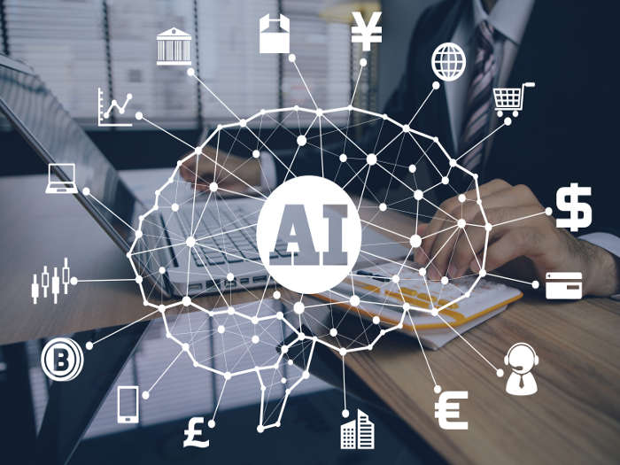

La inteligencia artificial (IA) es un campo de estudio que busca emular la inteligencia humana a través de
sistemas,algoritmos y procesos. La IA puede ser utilizada para resolver problemas y tomar decisiones de
manera similar a la mente humana.
Existen diferentes tipos de IA:
IA débil o estrecha (ANI):
Esta IA está entrenada y enfocada para realizar tareas específicas. Algunos
ejemplos de IA débil incluyen Siri de Apple, Alexa de Amazon, IBM Watson y vehículos autónomos.
IA general (IAG):
Es una forma teórica de IA en la que una máquina tendría una inteligencia igual a la de los
humanos; sería autoconsciente y tendría la capacidad de resolver problemas, aprender y planificar para el futuro.
Superinteligencia artificial (SIA):
Esta IA superaría la
inteligencia y la capacidad del cerebro humano.
La IA es considerada una revolución en la tecnología y se espera que cambie muchos aspectos de
nuestra vida. Sin embargo, también hay preocupaciones sobre los posibles peligros de la IA, como
la posibilidad de que las máquinas tomen decisiones que podrían ser perjudiciales para los
humanos.
Informacion en bruto IA
Luego de este datazo sobre las ia,en lo personal esto yo lo llamaria una convinacion entre las respuestas y
dudas sobre "¿que tipos?,¿que clases de IA existen? y ¿como son?" ya conclusos.Me gustaria darles
algunos datos en "bruto" interesantisimos sobre la IA (inteligencia artificial) mucho mas orientados a lo
que vendria siendo el enfoque de esta pagina,que seria brindarles y enriqueser sus mentes y me atreveria a decir
que al cabo de esto,este respondiendoles algunas dudas en sus brillaaantes mentecillas.
1._Transformación de la humanidad: El CEO de Google
, Sundar Pichai, afirmó que la inteligencia artificial (IA) sería más
transformadora para la humanidad como especie que la electricidad y el fuego.
2._Adopción en empresas: Una encuesta de McKinsey de 2021
encontró que el 56% de las empresas han adoptado la IA en al
menos una función dentro de la organización, lo que supone
un aumento del 50% con respecto al año anterior.
3._Simulaciones de IA: Un informe de PWC de este año
encontró que el 96% de los encuestados tienen la intención de
utilizar simulaciones de IA como gemelos digitales, Los gemelos digitales son
representaciones virtuales de objetos físicos, procesos, sistemas o entornos que reflejan sus
contrapartes del mundo real en apariencia y comportamiento2. Al permitir a las
organizaciones ejecutar simulaciones en un entorno virtual en lugar de físico,
estos gemelos digitales permiten a las empresas monitorear, analizar y optimizar sus operaciones..

4._
Origen del término: El término “inteligencia artificial” se
originó en 1956, como nombre para una conferencia de verano
celebrada en la Universidad de Dartmouth organizada por el
científico de la computación John McCarthy.

5._
Primeros robots: Uno de los primeros robots, o “autómatas”,
jamás fabricados fue un pato mecánico, creado por el inventor
francés Jacques de Vaucanson en 1738. El pato podía comer
maíz, beber agua, mover sus alas y graznar.

6._
Predicción de desastres naturales: La Inteligencia Artificial
puede predecir terremotos, volcanes y muchos otros desastres naturales.

Estos son solo algunos ejemplos de cómo la IA está cambiando nuestro mundo y tiene el potencial de tener un
impacto aún mayor en el futuro.